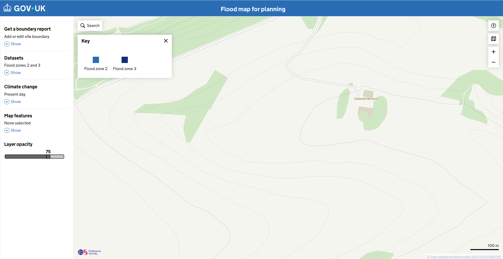
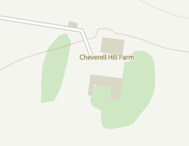
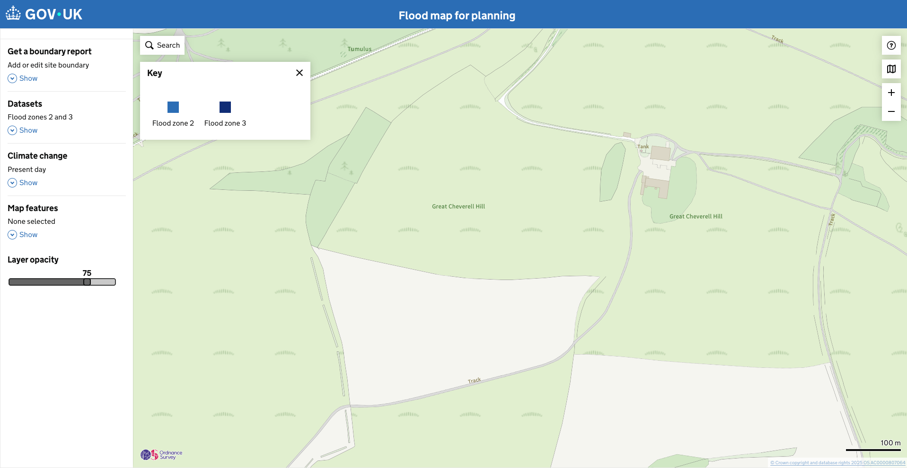
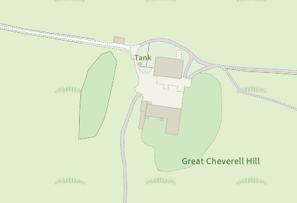

Published
Detailed basemap ('OS master map') for low zoom.
The December 2025 change to the service includes basemap improvements.
The high scale map is very basic. We had lots of feedback that the sites were not detailed enough, the roads were not all labeled, and there were visible styling bugs with the way the road names were displayed. Many users preferred the OS Master Map on the draw a boundary page, so we released an update to the service to accommodate the detailed map on the flood data screens, as well as the draw a boundary.
Note: We did not test this update with prototype users in testing ahead of this release, on the basis we know the map has tested well in the draw a boundary area of the service, and is often users' preferred basemap.

Comparison showing the low-detail initial basemap.

The new detailed OS Master Map provides better geographic context and road labeling.

The same area at zoom showing the improved detail and clarity.

{% endblock %}